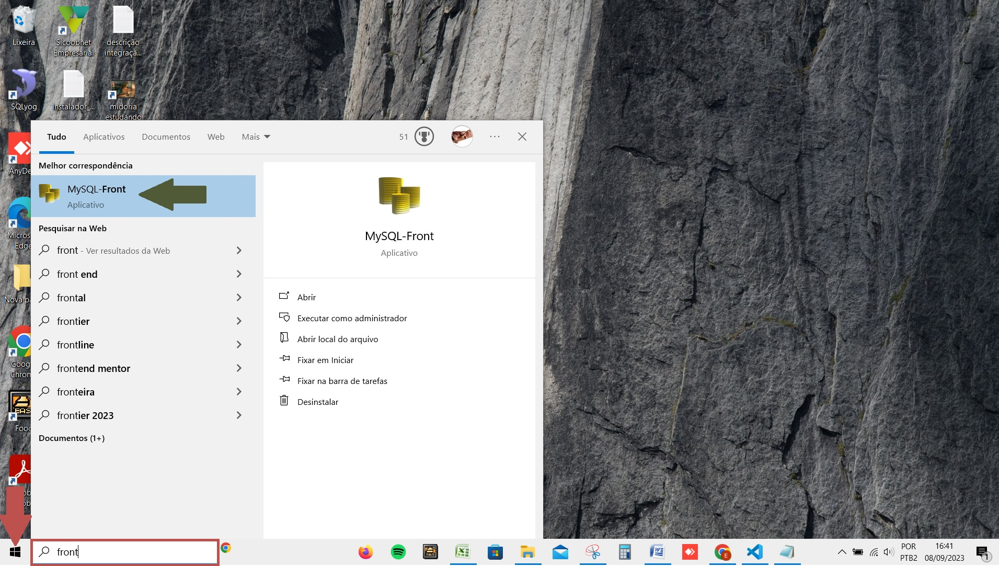

Rodando o backup

Você precisa estar no servidor para conseguir fazer o backup!
Entre em: Disco Local (C:) -> Aplicativos
Agora localize o arquivo backup2 (flecha e rentângulo vermelhos)

A tela a seguir irá aparecer. Nela o backup irá rodar automaticamente.

Como sei que deu certo?
Entre na pasta Backups e verifique qual a data da última atualização. Se preferir clique em data (flecha verde). Verifique se a última data corresponde a data do dia de hoje. Não se esqueça de verifica se o tamanho do arquivo tem mais de 1 KB, se isso ocorrer o backup não deu certo. No exemplo temos a informação do retângulo vermelho (veja a flecha azul). Se a data do último arquivo for a data de hoje o backup deu certo!

Não estou no servidor e preciso fazer backup
Clique no iniciar do windows (flecha vermelha) e agora digite front no local do retângulo vermelho. Agora clique no front (flecha verde).
A tela a seguir irá abrir. Nela clique com o botão esquerdo em bdpontofood. Agora clique em Export, depois clique em SQL file.

A tela a seguir irá aparecer, nela escolha um local e clique em Salvar (flecha vermelha).

Na tela a seguir clique em Finish (flecha vermelha).

No local da flehca vermelha inicialmente aparecerá Cancel, quando aparecer Close clique, o backup já estará pronto.